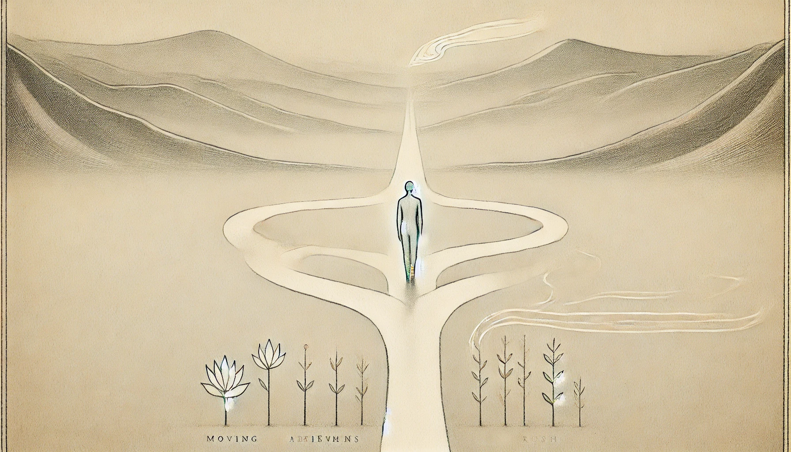

Journal 7: Once an achiever

I feel the weight of my past victories and failures.
Once an achiever, I became fearful of slowing down. I placed pressure on myself — to sustain, to outperform, to always move upward.
This pressure brought anxiety. It stole from me the joy of the process. My progress became a burden, my past achievements a cage.
But I am not my past successes.
I am not my past failures.
Each day, I am simply becoming.
Each step forward is growth, even when it feels small.
If I stumble, I am still moving.
If I pause, I am still breathing.
If I breathe, I am still alive.
That is enough.
So, I remind myself — breathe.
Keep going.
Keep growing.
~ Ron